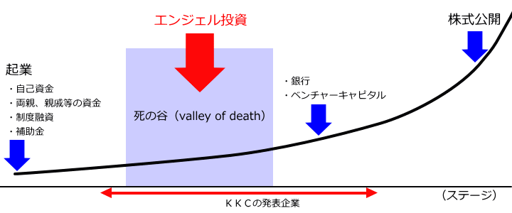

エンジェル投資の必要性
 通常、ベンチャー企業・起業家は、自己資金や両親・親戚等の資金、制度融資、補助金等を利用して起業し、これらの資金を使って基礎研究や商品開発を進め、これを市場に投入して資金を回収します。そして、売上げが上がらなければ、いずれ資金は枯渇し、起業は失敗します。ベンチャー企業・起業家は、限られた資金のなかで、トライアル＆エラーを繰り返して、自ら開発した商品を市場に投入し、売上げを目指すことになります。
売上げがある程度見込めるまでに成長する直前のベンチャー企業・起業家の多くは、自己資金が日に日に目減りし、制度融資については、精一杯活用してこれ以上借りることができない状況にあります。補助金を利用しようとしても、申請した目的のために使用する必要があるので、トライアル＆エラーの中で足枷になることがあります。一方で、売上げがない状況では、民間の銀行やベンチャーキャピタルから資金を得るのは困難です。
また、経営者としても、この時期は脱皮を求められます。これまでの個人事業に近い形態から、徐々に人を雇い、組織としての企業活動を進めていくことになります。この過程での軋轢、葛藤を通じて、起業家は経営者として成長する必要があり、成長できなければ、起業は失敗することになります。
このように、自己資金等で起業した段階と、売上げがあがって銀行・ベンチャーキャピタル等から資金を融通することができる段階までの間には、いくつもの乗り越えなければならない深い谷があります。これを、「死の谷」と呼びます。
私たちＫＫＣが目指すのは、この「死の谷」で悪戦苦闘するベンチャー企業・起業家に対して、資金供出や経営支援などを通じて支援する仕組みや社会を構築することです。
これらのベンチャー企業・起業家には、必ずしも大きな資金を必要とするものではありません。アメリカの検索エンジン大手のグーグルは、エンジェルからの10万ドルの出資が成長のきっかけになりました。エンジェルからのほんの数百万円の投資が、成長の起爆剤になるのです。
私たちのたんすの中で眠っているお金は、たんすの中にあるだけではただの紙切れですが、エンジェル投資としてベンチャー企業・起業家が有効に使用すれば、数十倍、数百倍の経済効果を生むことになります。もちろんベンチャー企業・起業家は失敗することも多くありますし、失敗すれば自らのお金も失うことになりますが、エンジェル投資を通じて養ったヒトを見る目、経営の疑似体験、ベンチャー企業・起業家の苦悩と喜びの共有などは、必ず人生をより豊かな迫力あるものにすることでしょう。
このようにベンチャー企業・起業家へのエンジェル投資は、たいへん重要なものであり、エンジェルの果たすべき役割にはすばらしい社会的意義があります。ただ、そのような高尚な意義を唱えなくても、１０００社に３社といわれる株式公開まで辿り着いた場合のリターンを少しだけ夢見つつ、エンジェルとしての活動を通じて自己成長を図りたい、そのような現実的な利益を設定してエンジェルとして活動することで、結果的に私たちのまわりの社会を活力あるものにできる、というのも事実であり、それで十分だと思うのです。